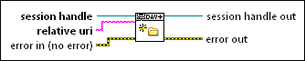

Create Directory VI
Owning Palette: WebDAV Synchronous VIs
Requires: Full Development System
Creates the specified directory on the remote WebDAV server. The full path to the parent directory must already exist. Otherwise, this VI returns an error.

 Add to the block diagram Add to the block diagram |
 Find on the palette Find on the palette |